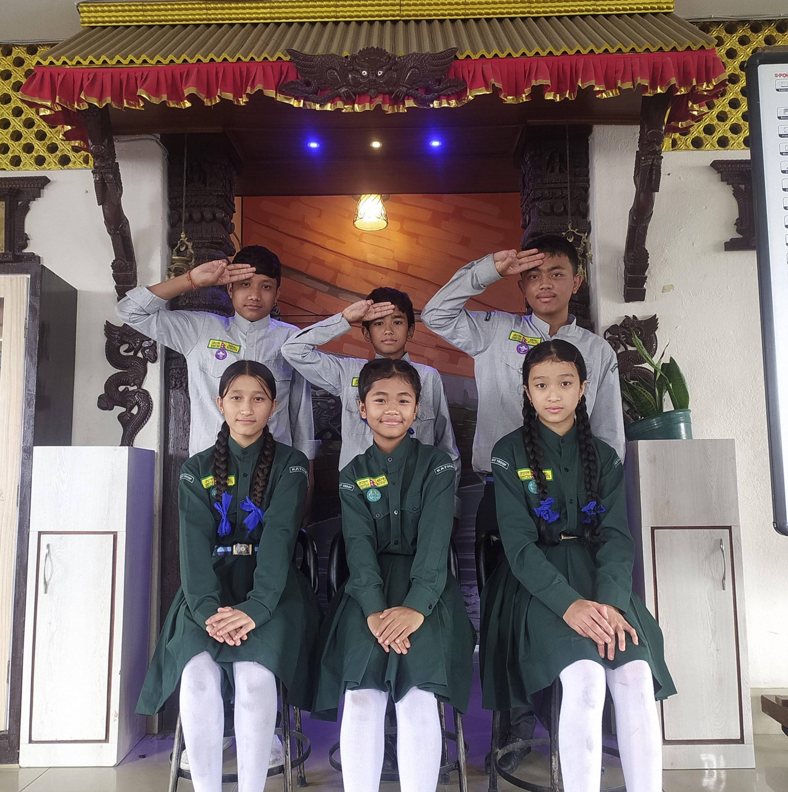

Scout
In our school, a scout engages in a variety of activities designed to promote personal development, teamwork, and community service. Scouts focus on learning to set goals, overcome challenges, and develop a strong moral compass. Scouts frequently engage in outdoor activities like camping trips, hiking, and nature exploration.